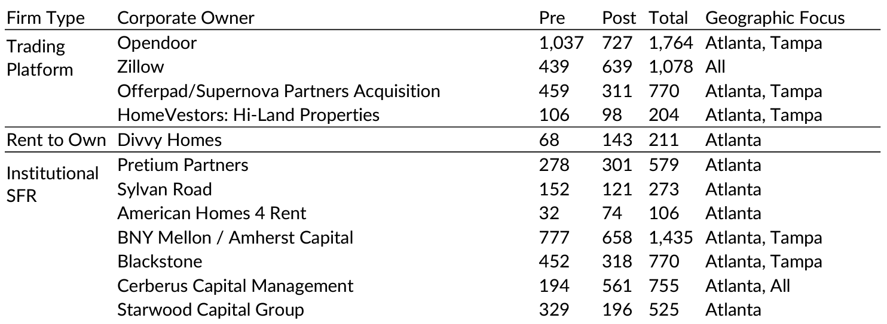

The rise of large corporate landlords is an important housing policy concern.
Institutional Single-Family Rentals (ISFR) is a relatively new housing and financial phenomenon that traces its roots to the subprime and foreclosure crises of the 2000s.
During this period, large corporate investors began purchasing foreclosed and bank-owned single-family homes with the intention of managing as single family rentals (Mills, Molloy, and Zarutskie 2019).
Overall, we find that after a brief pause in Q2 of 2020, large corporate investors operating in
Miami, Tampa and Atlanta increased their purchases during the pandemic, and by summer of
2021, were purchasing homes nearly twice as quickly than in 2019.
Fig.1 Trends in Volumes of ISFR Transactions (left), Median Sales Price (right) from 2019 to 2021
Large corporate investor purchases were divided evenly between firms that operate as trading platforms and firms that operate single family rental or rent-to-own. Single family rental and rent-to-own firms focused almost exclusively in Atlanta, whereas trading platforms bought large volumes of homes in each study area we observed.
Table.1 Types of large corporate buyers and purchase volumes
We confirm previous research which has found that large corporate single family rental and rent-to-own investors purchase in highly segregated, predominantly Black and non-White Hispanic areas, while avoiding high poverty neighborhoods and areas with low levels of owner-occupied housing stock. After the pandemic began, these large corporate investors increased purchases in places with high housing instability risk, and those hit hard by COVID-19.
Table.2 Changes in socio-economic characteristics of targeted neighborhoods of purchase by corporate type
You can find the full report from here .